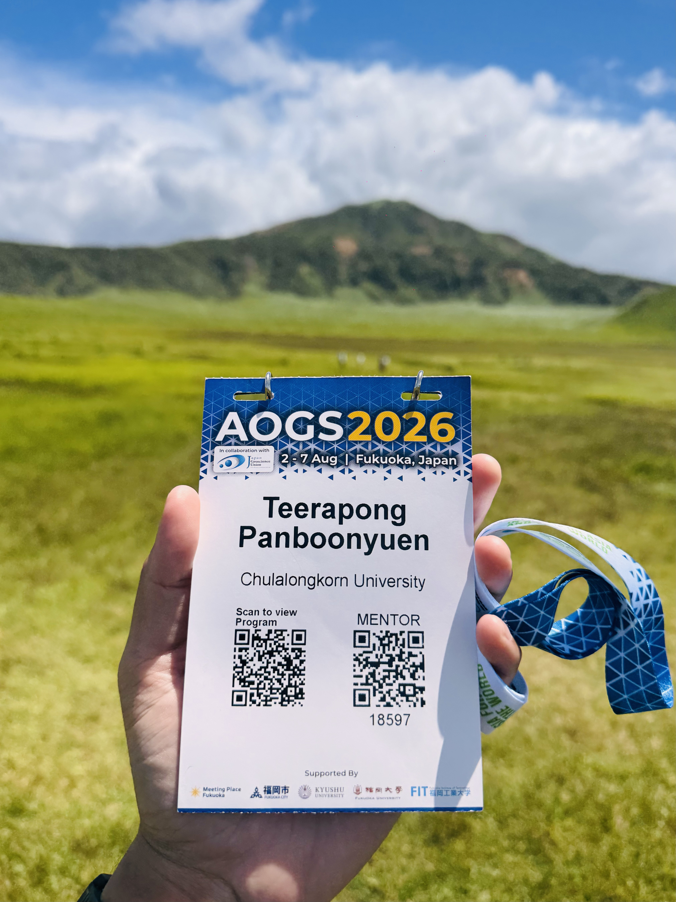
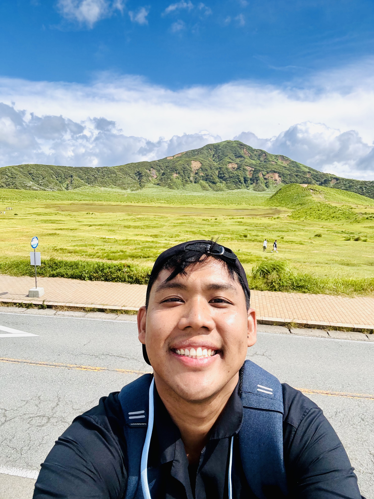
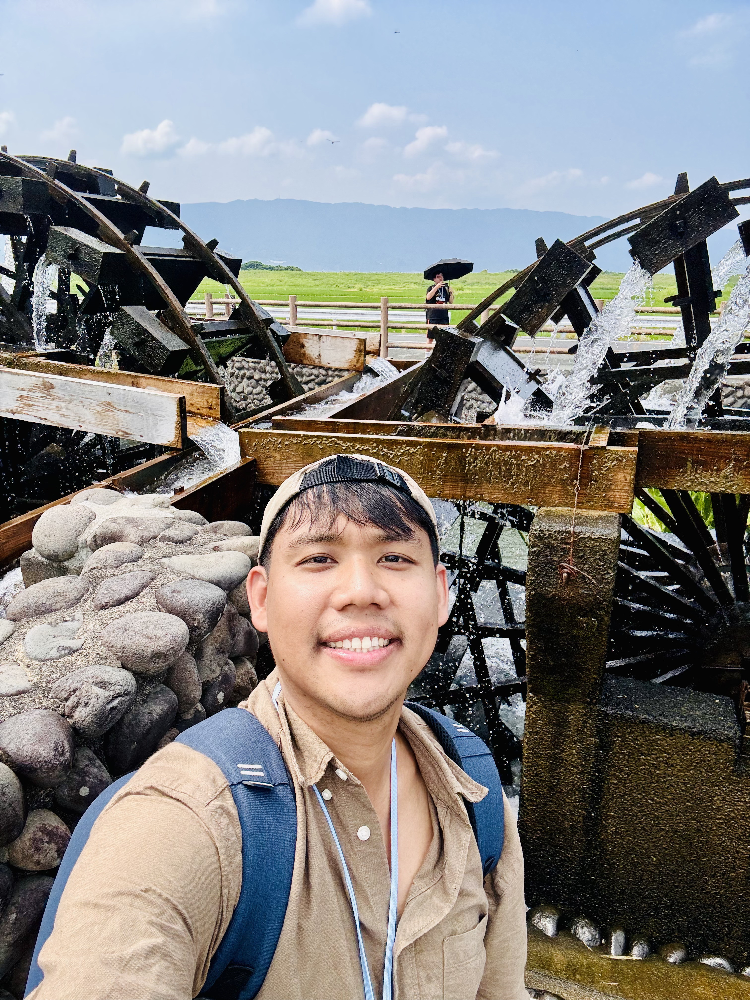
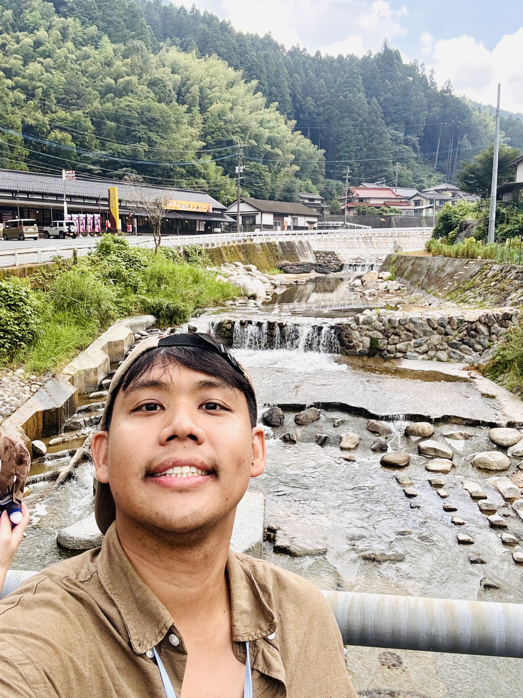
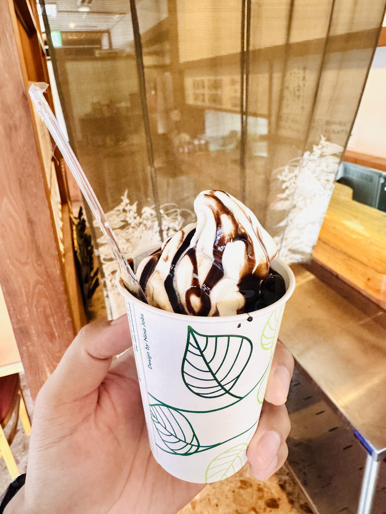
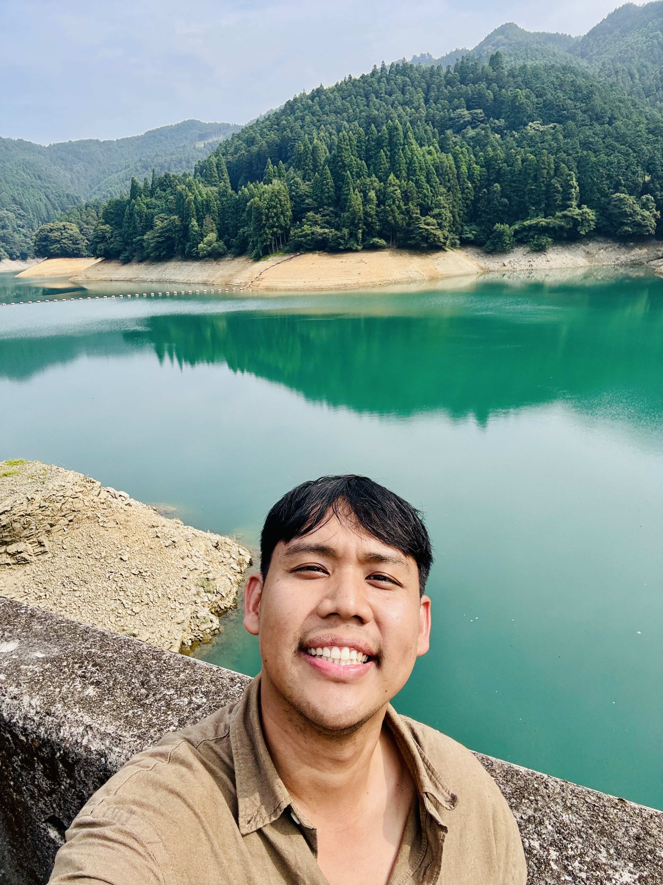
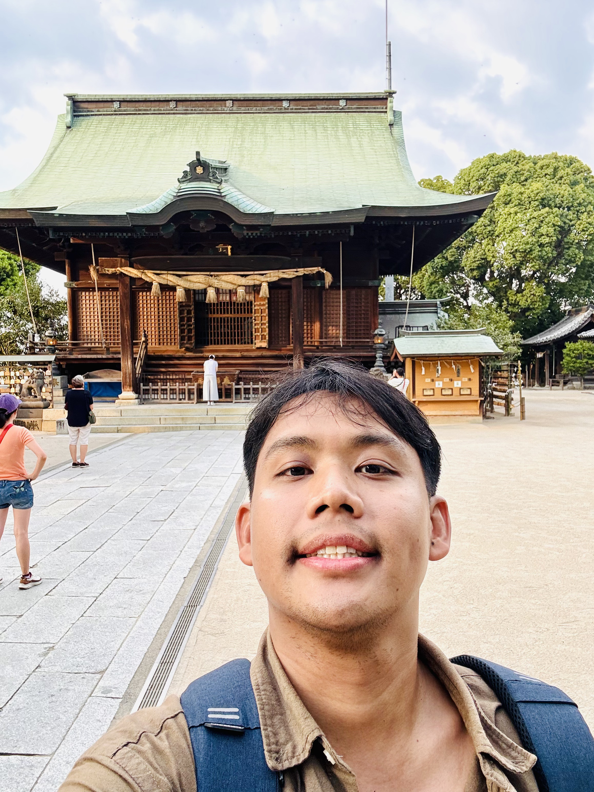

Exploring Aso Volcano and Water Heritage in Kyushu, Japan: My AOGS 2026 Field Trip
Presenting my GeoAI research at AOGS2026 led to an unforgettable geological journey across Kyushu—from the living landscapes of Aso Volcano to the centuries-old water heritage of Asakura.
 AOGS2026 Field Trip across Kyushu—exploring the active Aso Volcano, learning from Japan’s geological heritage, and discovering the historic water landscapes of Asakura.
AOGS2026 Field Trip across Kyushu—exploring the active Aso Volcano, learning from Japan’s geological heritage, and discovering the historic water landscapes of Asakura.
A Fourth Return to Japan, and a First Look at Kyushu
There is a particular kind of joy that comes from presenting your own research on foreign soil, and an even greater one when that trip turns into an adventure you didn’t quite expect. That’s exactly what happened to me at AOGS 2026 in Fukuoka, Japan, where I had the chance to present my work on GeoAI — and, almost as a reward for surviving the nerves of a conference talk, I found myself standing on the rim of an active volcano less than 48 hours later.
This was my fourth time visiting Japan, but my very first time setting foot on Kyushu, the southernmost of Japan’s main islands. My earlier trips had taken me to Tokyo on a solo adventure, then Osaka and Kyoto together, and later the snowy landscapes of Hokkaido and Sapporo. Kyushu felt like the missing piece of a puzzle I didn’t know I was building — and I could not have been happier to finally complete it.
AOGS ran for five full days, and as luck would have it, my presentation slot fell on the very first day. That meant the rest of the conference stretched out ahead of me like an open invitation, and I knew exactly how I wanted to spend it: not in another lecture hall, but out in the field, with actual rock, ash, and running water under my feet. So I signed up for two of the official AOGS field trips, each guided by geoscience experts from well-known Japanese universities — the kind of guides who make you fall in love with a landscape twice, once through your own eyes and once again through their explanation of it.
I chose two very different days. Day 1 took me deep into the countryside to see the Historical Waterwheels of Asakura, and Day 2 brought me face to face with the raw, restless power of Aso, one of the largest active calderas on Earth. I fell hard for that volcano — hard enough that, for a few hours at least, it gave even Mount Fuji some real competition for a place in my heart (though let’s be honest, Fuji-san will always hold a special spot of its own).

Figure 1: One of my absolute favorite photographs from the
entire AOGS 2026 Field Trip. This view around
Aso Volcano completely captured my heart. During the
Japanese summer, the mountains and grasslands were covered with incredible
green colors, creating a landscape that looked almost unreal.
I believe this direction may have been facing toward
Komatete-yama Hill or the Kusasenri area,
although the exact location is less important than the feeling this place
gave me. Standing in front of this enormous volcanic landscape, surrounded
by fresh air and endless greenery, I truly understood why Aso is considered
one of Kyushu's most spectacular natural treasures.
This was the moment when I completely fell in love with Aso Volcano.

Figure 2: A special photograph of myself with my
AOGS badge in front of the breathtaking landscape of
Aso Volcano.
One of the things I love about scientific conferences is that they are not
limited to lecture rooms and presentations. Sometimes the most meaningful
learning experiences happen outdoors—standing directly in front of the
landscapes we study and experiencing nature with our own eyes.
Aso was not only a beautiful travel destination, but also a living
geological classroom where volcanic history, Earth processes, and natural
landscapes could be experienced together.
Because the volcano trip is still so fresh in my mind — I only got back from it today — I want to tell that story first. Consider this Part 1 of a two-part journal. Part 2, all about the quiet, water-powered heart of Asakura, is coming right after.
Part 1: Exploring Aso, Japan’s Majestic and Living Volcano
I don’t think I have the right words for how it felt to stand there. “Beautiful” doesn’t quite cover it, and neither does “impressive.” What I can tell you is that the atmosphere at Aso is unlike anywhere else I’ve been — a landscape that is simultaneously peaceful and faintly threatening, green and gray, alive in the most literal geological sense.

Figure 3: Another beautiful perspective of the grasslands
surrounding Aso Volcano. Every direction offered a
completely different view, yet every scene shared the same peaceful and
powerful atmosphere.
The wide-open fields, volcanic mountains, and endless green landscape made
me feel incredibly small in the best possible way. It was a reminder of how
amazing our planet is and why exploring natural environments is such an
important part of understanding Earth.

Figure 4: Another unforgettable view around
Aso Volcano. The summer scenery was simply incredible:
endless green fields, gentle mountain slopes, and a peaceful atmosphere that
felt completely different from the busy city environment.
This kind of landscape is difficult to fully describe with words. You have
to stand there, breathe the fresh mountain air, and experience the silence
for yourself. Aso gave me a feeling of calmness and inspiration that I will
remember for a long time.

Figure 5: A selfie that probably explains everything about
how happy I was at Aso Volcano. Sometimes a smile in a
photograph tells the story better than any caption.
Looking at this picture, I can still remember how excited and grateful I
felt at that moment. Aso was more than just a beautiful location—it brought
back my curiosity, passion, and motivation.
Thank you, Aso Volcano, for bringing fresh energy back into my heart and
adding new fuel to the small fire of inspiration inside me. This place will
always be a special memory.
The tour description captured it well before I’d even boarded the bus: we would depart Fukuoka for a scenic journey to Aso Nakadake Crater, part of one of the world’s largest volcanic calderas, visit the Aso Volcano Museum to understand the region’s geology, eat lunch surrounded by the vast grasslands of New Kusasenri, learn how the volcano is monitored in real time, and finish at the Sugarukuzure Memorial Observatory — a quiet, sobering site that commemorates the natural disasters that have shaped this region.

Figure 6: A memorable selfie together with our wonderful
local Japanese field trip guide. Having someone who could explain the area,
share local knowledge, and guide us through each location made the
experience much more meaningful.
Throughout the field trip, professors and researchers from several Japanese
institutions, including The University of Tokyo and
Fukuoka Institute of Technology, kindly shared their
expertise and provided excellent explanations at every stop.
My sincere thanks to AOGS and HIS for
organizing such an amazing experience. This was not only a scientific field
trip, but also a journey filled with knowledge, friendship, and unforgettable
memories.

Figure 7: Another peaceful scene from the surrounding area
of Aso Volcano. The combination of volcanic terrain,
grasslands, and open skies created a landscape that felt both powerful and
peaceful at the same time.
As someone who loves both science and outdoor exploration, visiting Aso was
an incredibly meaningful experience. It was a rare opportunity to observe
nature not only through research data, but directly through the landscape
itself.
The Day, Hour by Hour
08:15 — Depart from Hakata Station. We met our guide at the designated meeting point in the early morning light and set off by bus toward Kumamoto and the Aso caldera. The drive itself was a geology lesson in motion, with the terrain shifting gradually from city sprawl to open farmland to the unmistakable rim topography of caldera country.
11:00 — Aso Nakadake Crater (60 minutes). This was, without question, the emotional and scientific centerpiece of the day. Nakadake is one of the most active volcanic vents in Japan, and it offers something genuinely rare: the chance to look directly into the crater of a living, breathing volcano. Steam curling off the crater floor, the acrid mineral smell in the air, the sheer scale of the caldera stretching out around us — it was humbling in the truest sense. As someone who works with geospatial data and AI models for a living, there’s something almost surreal about seeing the raw, physical reality behind the datasets I normally study on a screen.
12:15 — Lunch at New Kusasenri (60 minutes). After the intensity of the crater visit, lunch surrounded by New Kusasenri’s rolling grasslands felt like exhaling for the first time all morning. Grazing horses, wide-open sky, and a quiet reminder that volcanic landscapes aren’t only about destruction — they also build some of the most fertile, expansive land you’ll ever walk across.
13:30 — Aso Volcano Museum (60 minutes). Here, the guide walked us through the deeper science: how Aso’s caldera formed through a sequence of catastrophic eruptions roughly 90,000 years ago, how modern monitoring networks track seismic and gas activity in real time, and how local communities have learned to live alongside — rather than in spite of — an active volcano. For a geoscience audience, this museum alone is worth the trip.

Figure 8: Capturing the atmosphere in front of
Aso Volcano Viewing Park. From this viewpoint, the
magnificent volcanic landscape opened in front of us, showing the incredible
scale and beauty of this region.
Standing here reminded me that some experiences cannot be replaced by
photographs or videos. Being physically present in a place, feeling the
environment, and seeing the landscape with your own eyes creates a completely
different connection with nature.

Figure 9: Another beautiful view from the vast grasslands
around Aso Volcano. The landscape seemed endless, with
layers of green fields stretching toward the horizon.
Aso has a unique ability to make visitors slow down and appreciate the
moment. Away from the noise of everyday life, surrounded by nature, I felt
a deep sense of peace and gratitude for being able to experience such a
remarkable place.

Figure 10: One of my final selfies from
Aso Volcano, marking the end of an unforgettable journey.
Thank you so much, Kyushu. Thank you Fukuoka, AOGS, Aso Volcano, Asakura,
and every person who contributed to making this trip such a meaningful
experience.
This journey gave me much more than beautiful photographs. It gave me new
inspiration, new memories, and a stronger connection with Japan.
Arigatou, Japan. 🇯🇵
15:00 — Sugarukuzure Memorial Observatory (60 minutes). This stop shifted the tone entirely. The observatory commemorates the 2016 Kumamoto Earthquake and marks the site of one of that disaster’s most devastating landslides. Standing there, looking out over a landscape still visibly marked by that event, was a powerful reminder of how quickly beauty and danger coexist in this part of the world — and how much resilience it takes for a region to recover and rebuild.
16:00 — Depart back toward Fukuoka. 18:30 — Arrive at Hakata Station.

Figure 11: A quiet moment capturing the stairway leading
toward one of the viewpoints around Aso Volcano. Looking at
this path, I immediately felt the desire to explore further and continue
walking into the mountains.
Unfortunately, this trip was a scientific field excursion, not a trail
running adventure—so I had to save my trail dreams for another day. 555.
But honestly, that makes me even more excited to return someday. Perhaps the
next visit will not be for a conference, but for a proper trail adventure
where I can explore the mountains of Aso step by step. Until then, this
small glimpse of the trail is already a beautiful memory.

Figure 12: The final photograph from my
Aso Volcano collection. Ending this chapter with one more
view of this incredible landscape feels absolutely perfect.
Thank you, Aso, for the unforgettable scenery, the peaceful atmosphere, and
the inspiration you gave me. This place reminded me how beautiful our Earth
is and how important it is to continue exploring, learning, and appreciating
the natural world around us.
I truly hope I will have the opportunity to return here again someday.
Aso, please wait for me. ❤️🇯🇵
Why Aso Stays With Me
I’ve seen volcanoes before, in photographs, in satellite imagery, in the models I build for my own research. But nothing quite prepares you for standing at the edge of one that is still, quite literally, alive and breathing beneath your feet. Aso didn’t just give me a good photo for my feed — it gave me a physical, visceral understanding of why geoscientists dedicate entire careers to reading the language of the Earth. If Mount Fuji is the quiet, iconic love of my life, Aso is the thrilling, slightly dangerous one that reminds you why you fell in love with this field in the first place.
Part 2: Historical Waterwheels of Asakura — A One-Day Bus Tour from Fukuoka
If Aso was raw and dramatic, Asakura was its gentle counterpart — calm, slow, and deeply rooted in centuries of human ingenuity working with the land rather than against it. I genuinely loved this town. There is a stillness to Asakura that settles into you almost immediately, the kind of quiet that makes you want to slow your own pace to match it.
This tour promised an escape from the city and into the heart of Fukuoka’s countryside — a region defined by ingenious engineering and timeless craftsmanship, from the rhythmic spinning of 200-year-old waterwheels to the serene mountain kilns of Koishiwara. It delivered on every part of that promise.

Figure 13: After the incredible experience at
Aso Volcano, the next chapter of the AOGS field trip brought
us to another fascinating location—the
Historical Waterwheels of Asakura.
Standing in front of these traditional wooden waterwheels was a completely
different but equally impressive experience. Unlike the powerful volcanic
landscape of Aso, this place showed a quieter relationship between humans,
water, and agriculture.
These historic waterwheels represent generations of traditional Japanese
engineering, demonstrating how local communities have worked together with
nature for centuries.

Figure 14: Another perspective of the beautiful
Historical Waterwheels of Asakura. Walking around the area,
I found that every angle revealed a different story.
The wooden structures, flowing water, surrounding farmland, and peaceful
countryside atmosphere created a scene that felt like stepping into another
era. It was amazing to see how historical technology could remain functional
while becoming part of such a beautiful landscape.

Figure 15: One more view of the
Historical Waterwheels of Asakura. Although I took several
photographs here, each one captured a slightly different feeling.
The gentle movement of the waterwheels, the sound of the stream, and the
surrounding greenery created a peaceful atmosphere that was completely
different from the busy pace of modern cities.
This was one of those places where simply standing still and enjoying the
moment was already enough.
The Day, Hour by Hour
08:30 — Depart from Hakata Station. We met our guide and set out from the city into a landscape that grew greener and quieter with every kilometer.
09:45 — Yamada Weir and the Asakura Triple Waterwheel (90 minutes). This was the heart of the day, and honestly, one of the most moving engineering stories I’ve encountered on any trip. The Yamada Weir dates back to the end of the 18th century, and the waterwheels it feeds are the oldest working triple waterwheels in Japan — nearly 200 years old and still turning today, still doing the job they were built for. What struck me most was learning that this very weir inspired a project half a world away: in 1990, the late Japanese physician Tetsu Nakamura modeled a weir on Afghanistan’s Kunar River, at the Marwarid Canal, directly after the design of the Yamada Weir. Standing there, I found myself thinking about how a single, humble piece of 18th-century water engineering in rural Kyushu ended up irrigating farmland thousands of kilometers away, decades later, through one person’s vision. That’s the kind of quiet, invisible legacy that rarely makes headlines but changes lives.

Figure 16: Beyond the famous waterwheels, the surrounding
countryside of Asakura was equally beautiful.
The open fields, quiet roads, fresh air, and peaceful rural atmosphere made
this place feel like the perfect example of slow living in Japan. After
spending time in urban environments, experiencing this calm countryside was
incredibly refreshing.
Sometimes the most memorable travel moments are not found at famous
landmarks, but in simple landscapes where you can slow down, breathe, and
appreciate the beauty around you.

Figure 17: A happy selfie with the
Historical Waterwheels of Asakura behind me.
Looking back at this photo, I can still remember the peaceful feeling of
this place—the fresh air, the sound of flowing water, and the beauty of the
countryside surrounding us.
These small moments are exactly why I enjoy traveling. A single photograph
can bring back not only the scenery, but also the emotions and memories
attached to that moment.

Figure 18: On our way toward
Toho Koshiwaratsuzumi to continue the technical visit
related to dam engineering, we passed through beautiful natural scenery like
this small mountain stream.
The clear flowing water, green surroundings, and quiet atmosphere showed the
natural environment that supports the larger water systems we would later
study. It was fascinating to see the connection between small streams in the
mountains and large-scale water resource management.
11:30 — Lunch at Roppokan Hotel (60 minutes). A proper Japanese lunch course, served with the kind of warm hospitality that Japan consistently gets so right.
12:45 — Akatani River, Asakura City (pass-by). We saw the Akatani River from the bus window — now fully restored after the devastating torrential rains that struck Asakura in 2017. It was a quiet visual reminder of the region’s resilience, echoing the theme I’d already felt at Sugarukuzure the day before.
13:15 — Koishiwara Tsuzumi (pass-by). 13:30 — Koishiwara Pottery Exhibition Hall (60 minutes). This central showroom is co-managed by ten local kilns and houses an extensive collection of authentic Koishiwara-yaki pottery. The craftsmanship here is understated but extraordinary — earthy glazes, traditional brushed and combed patterns, and centuries of technique passed down through families of potters.
15:00 — Egawa Dam and Terauchi Dam (60 minutes). Two major dams, visited back to back, gave a real sense of scale and of just how central water management is to this region’s identity — from ancient waterwheels to modern hydraulic infrastructure, the story of Asakura is, at its core, a story about water.

Figure 19: A spontaneous selfie beside a small waterfall and
stream during our journey through the countryside.
These unexpected stops were some of my favorite moments because they allowed
me to experience Japan beyond the planned itinerary. The sound of flowing
water, the fresh mountain air, and the peaceful surroundings created a
relaxing atmosphere that I will always remember.

Figure 20: A small but unforgettable moment during our
journey to visit the dam sites—a delicious Japanese ice cream break.
After spending time outdoors exploring the countryside and learning about
water engineering, this simple dessert was the perfect refreshment. The
texture was incredibly smooth and creamy, the flavor was rich, and the best
part was that it was surprisingly affordable.
Sometimes the happiest travel memories are created from the smallest
experiences: sharing food, taking a short break, and enjoying the journey
together with new friends.

Figure 21: Visiting Egawa Dam was one of
the most impressive engineering experiences during the field trip.
Standing above the dam, I could see the tremendous power of flowing water as
it passed through the structure.
Seeing a large-scale water infrastructure project in reality was completely
different from studying it through papers, diagrams, or presentations.
Every component—from the reservoir to the spillway—showed the careful
planning and engineering required to manage water resources safely.
This visit was a perfect example of how field trips connect scientific
knowledge with real-world applications.

Figure 22: A selfie with the beautiful reservoir of
Egawa Dam behind me. The water was unbelievably blue,
almost like a hidden natural lake surrounded by mountains.
Looking at this photo, I couldn't help imagining how amazing it would be to
swim here in an open-water swimming adventure. 555.
Of course, this was a technical field trip, not a swimming expedition, but
the beauty of this place was impossible to ignore. It was fascinating to see
how human-made infrastructure could exist together with such a stunning
natural environment.
17:30 — Suitengu Shrine (45 minutes). We closed the day at Kurume Suitengu Shrine, a profound heritage site that embodies the deep spiritual connection between the people of this region and the water that sustains them.

Figure 23: Before the end of the AOGS field trip, our group
visited Suitengu Shrine and Maki Shrine
around the Senoshitamachi area.
After several days filled with scientific discussions, engineering visits,
and outdoor exploration, this cultural visit provided a peaceful ending to
our journey.
Japanese shrines always have a unique atmosphere—quiet, respectful, and
deeply connected with local history. It was a beautiful opportunity to
experience another side of Japan beyond science and technology.

Figure 24: A final selfie in front of
Suitengu Shrine.
This photograph represents the perfect combination of everything I
experienced during this trip: learning, exploration, culture, and personal
memories. From volcanic landscapes at Aso to historical water systems in
Asakura, every location showed a different and beautiful side of Japan.
I feel incredibly grateful for the opportunity to experience these places
through the AOGS field excursion.
19:15 — Arrive back at Hakata Station.
Why Asakura Deserves More Attention
Asakura doesn’t have the immediate, jaw-dropping drama of an active volcano crater — but it has something equally valuable: proof of what patient, generational engineering looks like when it works. Two-hundred-year-old waterwheels that still function today aren’t just a tourist curiosity; they’re a masterclass in sustainable design, maintained and respected long enough to outlive the people who built them.

Figure 25: Exploring the peaceful surroundings of
Maki Shrine.
Unlike crowded tourist destinations, this quiet local shrine offered a more
authentic experience of everyday Japanese life. The combination of
traditional architecture, greenery, and peaceful surroundings created a
special atmosphere that was both calming and memorable.
These small discoveries are often what make traveling meaningful. They
allow us to experience the character of a place rather than simply visit a
location.
A Thought for Kumamoto
I can’t write about this trip without acknowledging something heavier. Just weeks before I arrived, Kumamoto Prefecture — the very region I had walked through at Aso, past the Sugarukuzure earthquake memorial that commemorates the 2016 disaster — was struck by a powerful earthquake of its own. On July 28, 2026, a magnitude 7.1 earthquake (later revised to 6.8) shook Kumamoto, triggering building collapses, landslides, and the evacuation of hundreds of thousands of people, with a death toll that continued to rise in the days that followed.
Walking through a landscape that had already rebuilt itself once, from the 2016 earthquake and again after the 2017 Asakura floods, and knowing that same resilience was being tested yet again in real time, added a weight to this trip that I didn’t expect. Geoscience teaches you, in the abstract, that active tectonic and volcanic regions carry real risk alongside their beauty. Walking through Kumamoto so soon after this news made that lesson feel painfully real. My thoughts are with everyone affected — with the rescue teams still working, the families displaced from their homes, and the communities who now face the long, familiar work of recovery once again. If this region’s history has shown anything, it’s an extraordinary capacity to rebuild, and I hope that holds true once more.
Coming Home with a Full Heart
There’s a version of this trip report that ends with the itineraries and the photos, and I could have stopped there. But I don’t think that would be honest.
Truth is, I came into this AOGS trip running on fumes. Between my main job, side projects, teaching responsibilities, ongoing research, and all the smaller commitments that pile up quietly in the background, I had been exhausted for longer than I wanted to admit to myself. Fukuoka — and Kyushu more broadly — gave me something I didn’t know I needed: a few days of genuine wonder. Standing at the edge of Nakadake Crater, or listening to the creak of a 200-year-old waterwheel still doing its job, has a way of resetting your sense of scale. It reminded me that the things I find exhausting in daily life are small against the backdrop of geological time, and that there is still so much beauty and meaning worth showing up for.

Figure 26: Ending the AOGS 2026 Field Trip story with this
peaceful scene beside the irrigation canal near
Suitengu Shrine.
This image perfectly represents something I truly admire about Japan: the
thoughtful connection between people, nature, and infrastructure. A simple
canal can become a beautiful space for walking, running, cycling, and
relaxing.
The carefully designed pathways, clean environment, and peaceful scenery
show the attention to detail that makes everyday Japanese landscapes so
special.
This is Japan at its best—not only the famous landmarks, but also the quiet
everyday places that make you stop and appreciate life.
Thank you, Aso. Thank you, Asakura. Thank you, Japan, for another
unforgettable journey. I hope I can return again someday. 🇯🇵❤️
I’m heading back to Bangkok with more than souvenirs. I’m heading back recharged, grateful, and genuinely reminded that life — even the busy, tiring version of it — is still very much worth living and worth fighting for.
Thank you, Japan, for being endlessly generous to me on every single visit. And thank you, Kyushu, for giving me a volcano to fall in love with and a river town to fall quiet in.
Until the next trip. 🌋💧
Citation
Panboonyuen, Teerapong. (August 2026). Exploring Aso Volcano and Water Heritage in Kyushu, Japan: My AOGS 2026 Field Trip. Blog post on Kao Panboonyuen Blog.
https://kaopanboonyuen.github.io/blog/2026-08-06-exploring-aso-volcano-and-water-heritage-in-kyushu-japan-my-aogs-2026-field-trip/
For a BibTeX citation:
@article{panboonyuen2026aogsfieldtrip,
title = "Exploring Aso Volcano and Water Heritage in Kyushu, Japan: My AOGS 2026 Field Trip",
author = "Panboonyuen, Teerapong",
journal = "Kao Panboonyuen Blog",
year = "2026",
month = aug,
day = "6",
url = "https://kaopanboonyuen.github.io/blog/2026-08-06-exploring-aso-volcano-and-water-heritage-in-kyushu-japan-my-aogs-2026-field-trip/"
}
Thank you for joining me on this unforgettable AOGS 2026 field excursion across Kyushu, Japan. What began as a scientific journey to present my GeoAI research at the Asia Oceania Geosciences Society (AOGS 2026) unexpectedly became one of the most memorable geoscience adventures of my life.
Beyond the conference sessions in Fukuoka, I had the privilege of joining two official AOGS field trips led by distinguished Japanese geoscientists. The first brought me to the magnificent Aso Volcano, where I stood at the rim of Nakadake Crater, one of the most active volcanic vents within one of the world’s largest calderas. Visiting the Aso Volcano Museum, learning about state-of-the-art volcanic monitoring systems, and witnessing the immense geological forces that continue to shape Kyushu reminded me why I chose a career in Earth observation, remote sensing, and GeoAI.
The second excursion revealed a completely different side of Kyushu through the peaceful countryside of Asakura. There, I explored the historic Yamada Weir and Japan’s iconic Triple Waterwheels, remarkable examples of sustainable hydraulic engineering that have supported agriculture for more than two centuries. Visiting traditional pottery villages, dams, rivers, and cultural heritage sites illustrated how generations of local communities have lived in harmony with nature while preserving invaluable engineering knowledge and craftsmanship.
These field experiences reminded me that geoscience extends far beyond satellite imagery, computational models, and scientific publications. Standing beside an active volcano, visiting earthquake memorials, and observing communities that continue to recover from natural disasters reinforced why understanding Earth’s dynamic systems is so important—not only to advance scientific knowledge but also to help societies become more resilient in the face of natural hazards.
My thoughts are also with the people of Kumamoto, who continue recovering from recent earthquake impacts. Visiting this remarkable region reminded me that while Earth constantly reshapes the landscapes we admire, the resilience, kindness, and determination of its people are equally inspiring. I sincerely hope recovery continues smoothly and that brighter days lie ahead for every affected community.
I would like to express my heartfelt gratitude to the Asia Oceania Geosciences Society (AOGS) for organizing another outstanding international conference and these exceptional field excursions. My sincere appreciation also goes to the Japanese geoscientists, guides, organizers, volunteers, and fellow participants whose expertise and passion transformed every destination into an unforgettable outdoor classroom.
Finally, thank you, Japan.
Every visit leaves me with something far more valuable than photographs or souvenirs. This journey to Kyushu arrived during one of the busiest periods of my life, and somehow its volcanoes, rivers, mountains, and peaceful countryside helped me slow down, recharge, and rediscover why I love studying our planet. I came to Fukuoka to share my research with the international scientific community, but I returned home carrying something equally meaningful—renewed inspiration, lasting memories, and a deeper appreciation for the extraordinary Earth we are privileged to explore.
Explore the Earth. Learn from Nature. Never Stop Being Curious. 🌋🌏🇯🇵
Teerapong Panboonyuen
My research focuses on leveraging advanced machine intelligence techniques, specifically computer vision, to enhance semantic understanding, learning representations, visual recognition, and geospatial data interpretation.